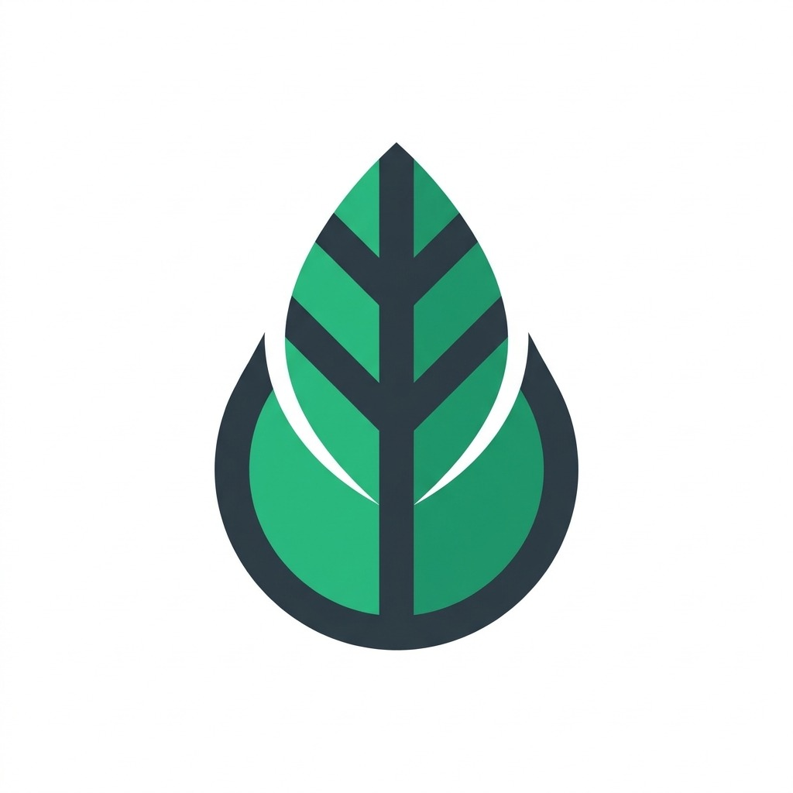

Smart Irrigation System
Локация участка (GPS)
Ожидает GPSОпределите координаты поля для автоматического запроса спутниковой радиации, ветра и влажности почвы по модели FAO-56.
Сельскохозяйственная культура
KcВыберите культуру для учёта биологического коэффициента транспирации (Kc).
Параметры поля
гектарТип оросительной системы
КПД (η)Выберите метод полива для корректного расчёта коэффициента эффективности применения воды.
Адресная подача в прикорневую зону. Экономия воды 40–50%.
Имитация дождя через форсунки. Равномерное распределение по площади.
Круговая дождевальная машина. Оптимален для крупных открытых участков.
Традиционный самотечный полив. Высокие потери на фильтрацию.
Трубки под поверхностью почвы. Минимум испарения, максимум эффективности.
Спутниковый анализ и расчёт по формуле FAO-56 Penman-Monteith